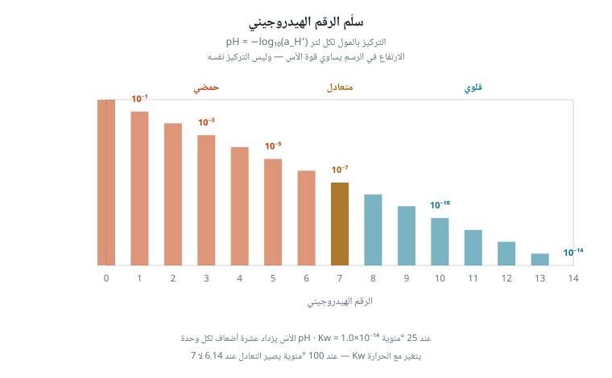

الرقم الهيدروجيني
pH
مقياس لوغاريتمي لنشاط أيون الهيدروجين في محلول مائي، يُعرَّف بأنه سالب لوغاريتم هذا النشاط. فكل وحدة واحدة على السلم تعني عشرة أضعاف في التركيز، والمحلول المتعادل عند 25 °ميل يقع عند 7.00 لأن حاصل إذابة الماء 1.0×10⁻¹⁴.
الرقم الهيدروجيني أداة اختصار رياضية: بدلًا من كتابة تركيز أيون الهيدروجين 0.0000001 مولار يُكتب 7. التعريف الدقيق يستخدم النشاط لا التركيز، لأن الأيونات في محلول مِلحي تتفاعل كهربائيًّا فتنخفض فاعليتها عن تركيزها الحقيقي. pH = −log₁₀(a_H⁺)، ويُقاس عمليًّا بقطب زجاجي حساس يقارن كمونًا بقطب مرجعي ثابت، لا بعدّ الأيونات.
لأن السلم لوغاريتمي، فإن فرقًا بمقدار ثلاث وحدات بين pH 3 وpH 6 يعني تركيزًا أعلى بألف مرة، لا ثلاثة. والسلم محدود بمذيب الماء: عند 25 °مئوية لا يمكن أن يجتمع تركيز الهيدروجين والهيدروكسيد على أكثر من 1.0×10⁻¹⁴، ومن هنا يأتي التعادل 7.00، وهو رقم يعتمد على الحرارة فيصير 6.14 في ماء نقي عند 100 °مئوية بلا أن تصير الماء حمضية.
الآلية
كيف يحدث الأمر على مستوى الجسيمات أو المتغيّرات المباشرة
ينشأ أيون الهيدروجين من تفاعل حمض–قاعدة. الحمض يمنح بروتونًا لقاعدة الماء فيتكوّن H₃O⁺، والقاعدة تأخذ بروتونًا فتقلّ حموضة المحلول. التوازن لا يختفي بل ينتقل: إضافة حمض قوي ترفع [H⁺] فتنخفض [OH⁻] ليبقى حاصل ضربهما Kw ثابتًا. القطب الزجاجي يعمل بطبقة هلامية رقيقة على سطح كرة حساسة تتبادل أيونات الهيدروجين مع المحلول فيتكوّن كمون حدّي يتناسب مع اللوغاريتم، فيكون خرج القطب بالفولت خطًّا مستقيمًا مقابل pH بانحدار يقارب 59 ميلّي فولت لكل وحدة عند 25 °مئوية.
الأرقام والوحدات
العلاقات والوحدات والنطاقات العددية التي تسند الشرح
عند 25 °مئوية Kw = 1.0×10⁻¹⁴ مول²/لتر²، ففي الماء النقي [H⁺] = 1.0×10⁻⁷ مولار وpH = 7.00. محلول حمض الهيدروكلوريك 0.01 مولار يعطي pH = 2.00 لأن −log(10⁻²) = 2، وقاعدة مثل هيدروكسيد الصوديوم 0.01 مولار تعطي pOH = 2 ومنه pH = 12.00. وفي الحساب الأدق يُستبدل التركيز بالنشاط: في محلول مِلحي قويّ 0.1 مولار يكون معامل النشاط نحو 0.83 فيصير pH المحسوب من التركيز 2.00 والحقيقي 2.08 — فرقًا يتجاوزه كثير من الأجهزة الرخيصة.
الفرق الدقيق
المفهوم الملتبس الذي يُخلَط به، وأين ينفصلان
الرقم الهيدروجيني ليس مقياسًا لقوة الحمض ولا لكميته: حمض قوي مخفّف جدًّا قد يكون أقل حموضة من حمض ضعيف مركّز. وليس مقياسًا للحموضة الكلّية: الماء الغازي (حمض الكربونيك) له pH نحو 3.9 لكن حموضته الكلّية قابلة للمعايرة لأن الحمض يتفكك تدريجيًّا. والفرق الثالث هو القلوية: pH مرتفع لا يعني بالضرورة قلوية عالية عند التعادل، فماء متعادل بلا أيونات قد يُظهر pH 6.5 وهو ليس حمضيًّا بالمعنى الكيميائي.
حدود التعريف
أين ينكسر التعريف أو النموذج وما الذي لا يفسّره
يُعرَّف pH في الماء وحده؛ في المذيبات العضوية يُستخدم مقياس فرعي مكافئ لا يُقارن مباشرة. ويَخرج عن نطاق 0–14: حمض مركز جدًّا قد يعطي قيمة سالبة، ومحلول قلوي مركز قد يتجاوز 15. ويضعف القطب الزجاجي عند القيم المتطرفة وعند الحرارة العالية ويحتاج معايرة بمحاليل قياسية، ويخطئ في المحاليل منخفضة التوصيلية كالماء المنزوع الأيونات. ولا معنى له في الأنظمة غير المائية أو الغازات أو الأوساط الصلبة، حيث تُستخدم فاعلية البروتون بمقاييس أخرى.

| الكمية | القيمة | المصدر |
|---|---|---|
| حاصل إذابة الماء Kw عند 25 °مئوية | 1.0×10⁻¹⁴ مول²/لتر² | [1] |
| pH التعادل في الماء النقي عند 25 °مئوية | 7.00 وحدة pH | [1] |
| pH الدم الشرياني للشخص السليم | 7.40 وحدة pH | [2] |
| انحدار قطب الهيدروجين النظري عند 25 °مئوية | 59.16 ميلّي فولت لكل وحدة pH | [3] |
المصادر
- 1 pH — IUPAC Compendium of Chemical Terminology (Gold Book) — International Union of Pure and Applied Chemistry. goldbook.iupac.org/terms/view/P04524 · اطُّلع عليه 2026-11-16
- 2 Acid-base balance — pH of body fluids — NCBI Bookshelf, National Center for Biotechnology Information. www.ncbi.nlm.nih.gov/books/NBK507807/ · اطُّلع عليه 2026-11-16
- 3 pH — the logarithmic scale and glass electrode response — Encyclopaedia Britannica. www.britannica.com/science/pH · اطُّلع عليه 2026-11-16
استشهد بهذا المصطلح
الصيغتان مبنيتان من بيانات الصفحة نفسها: العنوان والتاريخ ورابط النسخة المنشورة.
الرقم الهيدروجيني — pH. (2026). ديوان المعرفة — انفراد. https://infiradev.com/diwan/terms/ph.html
@misc{ph2026,
title = {الرقم الهيدروجيني},
titleaddon = {pH},
howpublished = {{ديوان المعرفة — انفراد} — مرجع علمي عربي},
year = {2026},
url = {https://infiradev.com/diwan/terms/ph.html},
urldate = {2026-11-16},
note = {مراجعة علمية: تحرير انفراد الآلي — نُشر بأمر عبدالله الهويدي}
}
راجعه: تحرير انفراد الآلي — نُشر بأمر عبدالله الهويدي · 2026-11-16 · آخر تحديث 2026-11-16